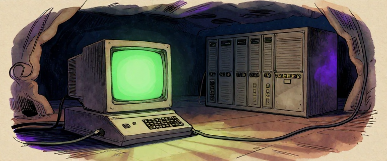
It was 1969. Humans had just walked on the moon. But back on Earth, the world of computing was fractured.
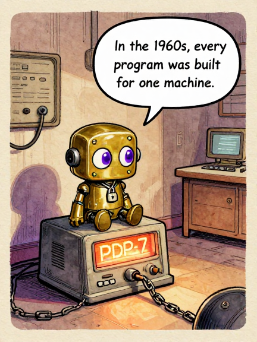
In the 1960s, every program was built for one machine.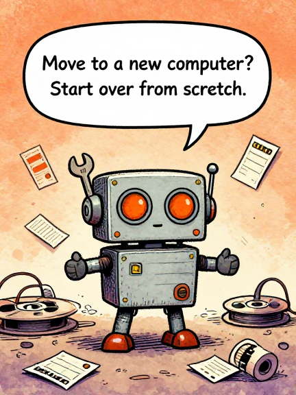
Move to a new computer? Start over from scratch.Every operating system was hand-stitched for one machine, like a suit that only fits one person. Write a program on an IBM mainframe, and it could never run on a DEC minicomputer. Write it on a PDP-7, and it was trapped there forever.
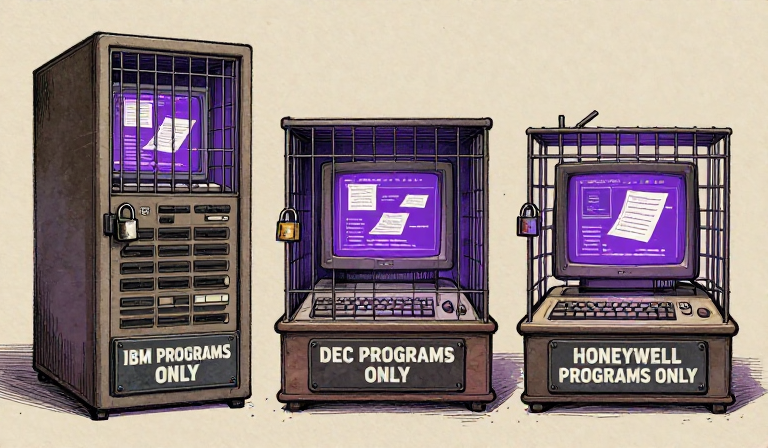
Software was powerful — but it was chained to the hardware it was born on.
That was about to change. In a quiet lab in New Jersey, two programmers were about to build something small, elegant, and radical. Not a bigger machine. Not a faster processor. An idea — a philosophy that would reshape all of computing.
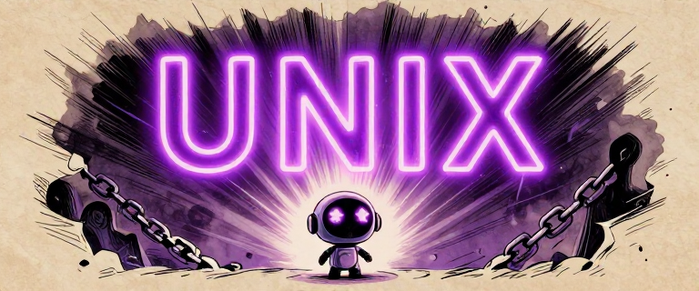
They called it Unix.Before Unix, software was trapped. One program, one machine. The story of the 1970s and 1980s is the story of setting software — and people — free.
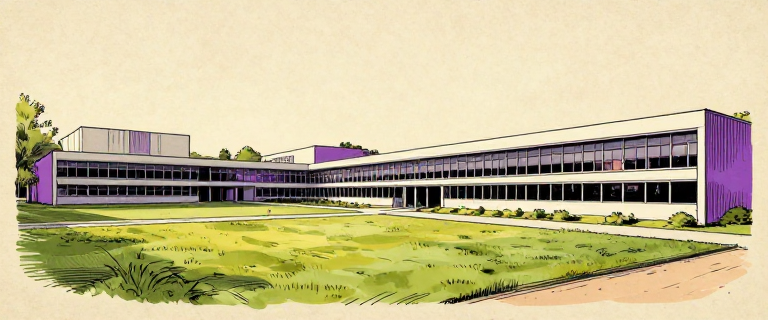
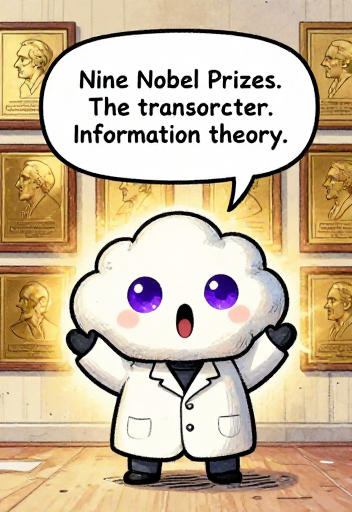
Nine Nobel Prizes. The transistor. Information theory.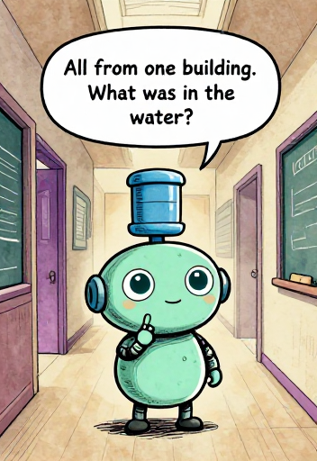
All from one building. What was in the water?Bell Telephone Laboratories was the research arm of AT&T, the American telephone monopoly. It operated from 1925 onward, and its output was staggering.
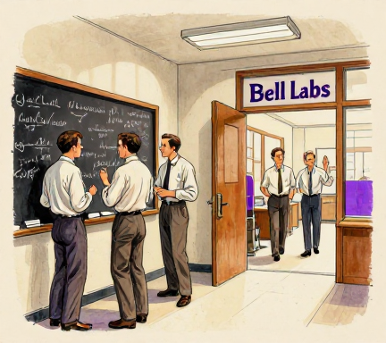
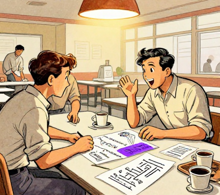
The transistor? Bell Labs, 1947. Information theory — the mathematical foundation of all digital communication? Claude Shannon at Bell Labs, 1948. The laser? Bell Labs. Satellite communications? Bell Labs. Radio astronomy? Bell Labs.
AT&T was a regulated monopoly. It could afford to fund pure research with no expectation of immediate profit. Bell Labs management had a radical philosophy: hire brilliant people, give them freedom, and trust that useful things will emerge.
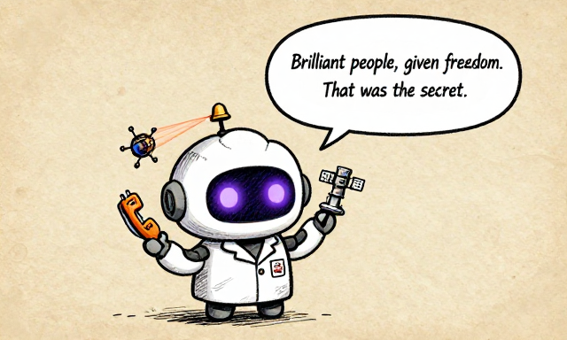
Brilliant people, given freedom. That was the secret.In the late 1960s, a corner of this extraordinary environment — Department 1127, the Computing Techniques Research group led by Doug McIlroy — became the birthplace of Unix. Ken Thompson and Dennis Ritchie were there. So was Brian Kernighan. So was Lorinda Cherry, a mathematician and programmer who developed tools like eqn — software that let scientists typeset mathematical equations directly from a terminal.
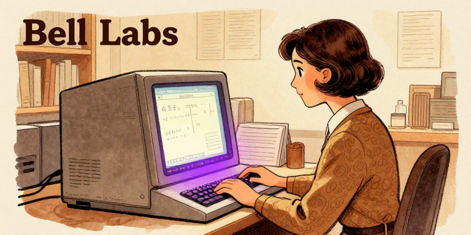
But the Bell Labs of the 1960s and 1970s was overwhelmingly white and male. This was not accidental — it reflected structural barriers. Most top CS programs admitted few women and fewer people of color. Bell Labs recruited almost exclusively from these programs. The contributions that did come from people outside that narrow slice — like Cherry's — only make the question of what was lost sharper.
Bell Labs proved something profound: when you give brilliant people freedom and surround them with other brilliant people, the results can change the world. Not in spite of having no immediate commercial goal — because of it.
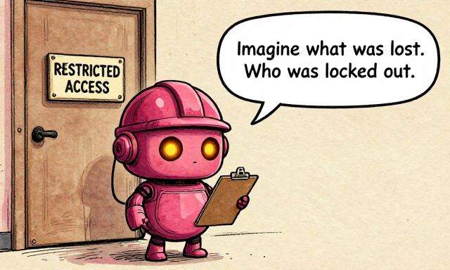
Imagine what was lost. Who was locked out.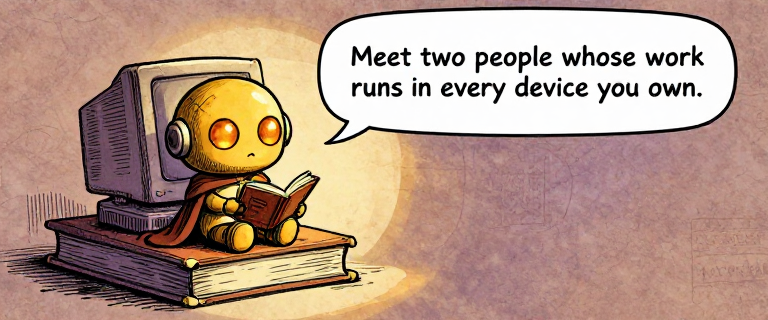
Meet two people whose work runs in every device you own.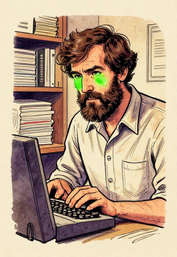
Ken Thompson (born 1943, New Orleans) joined Bell Labs in 1966. He was a quiet, unassuming hacker — the kind of programmer who would think about a problem for days, then write the solution in a single explosive burst of coding.
Dennis Ritchie (1941–2011, Bronxville, New York) joined Bell Labs in 1967 with degrees in physics and applied mathematics from Harvard. Where Thompson was the rapid-fire builder, Ritchie was the deliberate designer — modest, self-effacing, someone who expressed himself more clearly in writing than in speech.
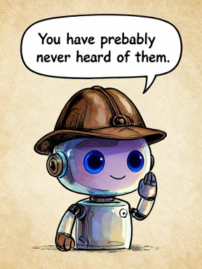
You have probably never heard of them.Both had worked on Multics, an ambitious time-sharing OS built by Bell Labs, MIT, and GE. But Multics was over-engineered and behind schedule. Bell Labs pulled out in early 1969. Thompson was frustrated — he liked the ideas, but thought they were buried under too much complexity.
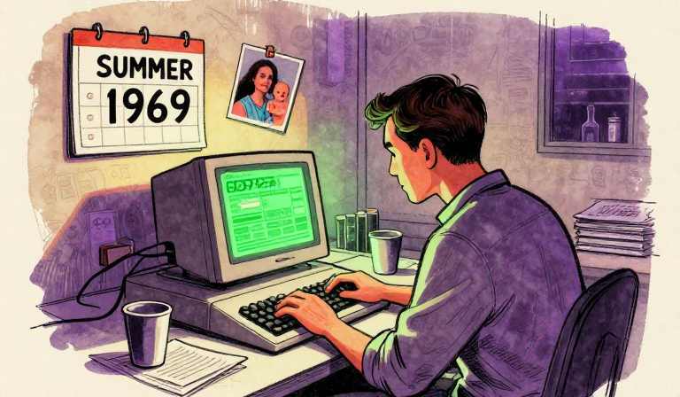
In the summer of 1969, Thompson's wife Bonnie took their infant son to California. Suddenly, Thompson had uninterrupted time and a barely-used PDP-7. In roughly three weeks, he wrote a working prototype: an OS kernel, a shell, an editor, and an assembler. "One week, one week, one week."
But this initial burst was just the beginning. From 1970 onward, Ritchie was deeply involved. McIlroy contributed the pipe mechanism. Kernighan named it and helped document it. Joe Ossanna built text-processing tools. Lorinda Cherry developed mathematical typesetting. The name "Unix" was coined by Brian Kernighan as a pun on Multics: uniplexed versus multiplexed. Unix was Thompson's spark — but it was Bell Labs' fire.
From Multics to Unix: the timeline of a revolution
Think About It: Thompson stripped Multics down to its essentials. Multics tried to do everything; Unix did a few things, simply and well. Have you ever noticed that the most useful tools in your life are often the simplest ones?
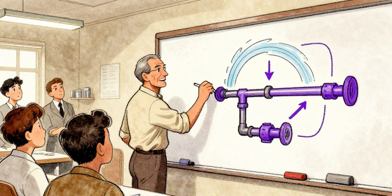
Doug McIlroy, the head of the department where Unix was born, had been championing an idea since the early 1960s. In a 1964 memo, he wrote: "We should have some ways of coupling programs like garden hoses — screw in another segment when it becomes necessary to massage data in another way."
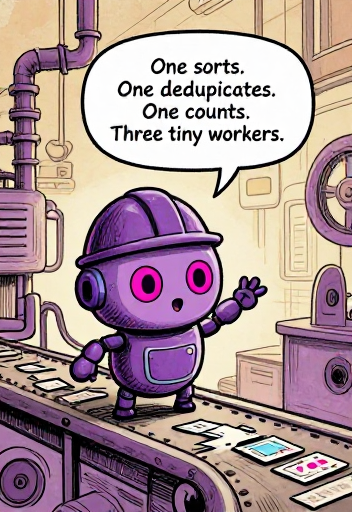
One sorts. One deduplicates. One counts.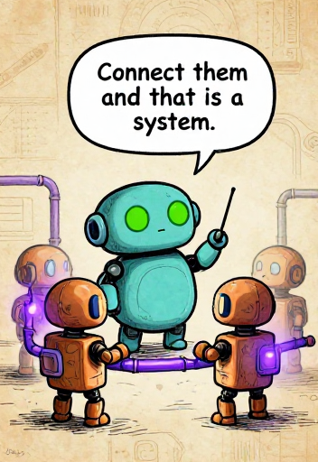
Connect them and that is a system.In 1973, Thompson implemented it. The pipe — represented by the | symbol — allowed the output of one program to flow directly into the input of another. Before pipes, you had to save intermediate files at every stage. Pipes eliminated the friction and made composing small programs feel natural.
Three tiny tools, one useful answer — the Unix pipe in action
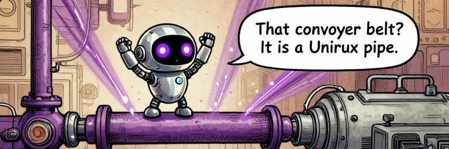
That conveyor belt? It is a Unix pipe.McIlroy articulated the Unix philosophy: "Write programs that do one thing and do it well. Write programs to work together. Write programs to handle text streams, because that is a universal interface."
No intermediate files. No friction. Just flow.
Don't build a Swiss Army knife. Build a knife, a screwdriver, and a can opener — and make them work together. The power is in the composition, not in any single tool. Remember this idea. It will come back 55 years later, in a very surprising way.
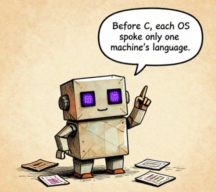
Before C, each OS spoke only one machine's language.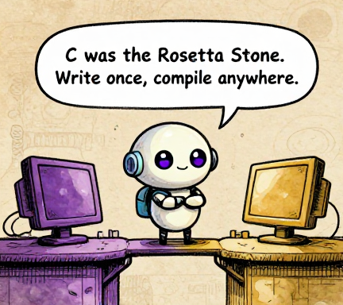
C was the Rosetta Stone. Write once, compile anywhere.Thompson's B language (1969–70), derived from Martin Richards's BCPL (Cambridge, 1966), worked on the word-addressed PDP-7. But when Unix moved to the byte-addressed PDP-11, B's lack of a type system became a problem. Between 1971 and 1973, Dennis Ritchie transformed B into something new: C — named simply because it came after B.
C occupied a unique position. High-level enough that humans could read it. Low-level enough to replace assembly language. It gave you pointers — direct addresses into memory, like GPS coordinates to specific locations in the machine. Powerful, yes. But dangerous: point to the wrong address and your program crashes, or worse.
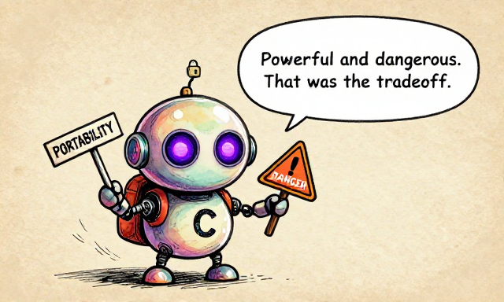
Powerful and dangerous. That was the tradeoff.In 1973, Thompson and Ritchie rewrote Unix in C. For the first time in history, a production operating system was written in a high-level language instead of assembly. Unix was no longer locked to the PDP-11.
The C portability model — write once, compile for each target
Portability did not mean "press a button." Writing a C compiler was hard work — weeks or months of effort. But the savings compounded: every new program written in C could run on every platform with a C compiler. Write once, compile anywhere — if you had a compiler.
A legal quirk accelerated Unix's spread. AT&T was barred from selling software under a 1956 consent decree, so Unix was distributed to universities with source code included. At UC Berkeley, Bill Joy created the Berkeley Software Distribution (BSD), an influential variant that would shape networking, free software, and eventually macOS.
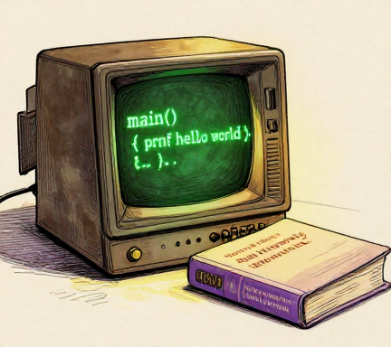
In 1978, Brian Kernighan and Ritchie published The C Programming Language ("K&R"), establishing the tradition of starting every programming tutorial with a simple "hello, world" program. Kernighan said the phrase came from a cartoon of a chick hatching from an egg.
C's gift was portability. Before C, every operating system was a custom suit for one body. After C, an operating system was a sewing pattern — but adapting it for each new fabric still required a skilled tailor (the compiler writer). The revolution was not that porting was easy. It was that porting was possible.
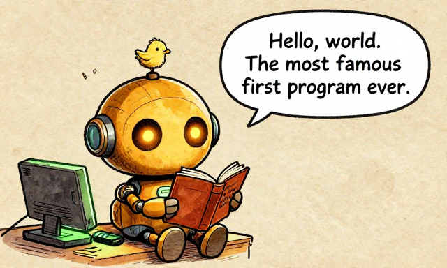
Hello, world. The most famous first program ever.Think About It: C trusts the programmer completely — it will let you do anything, including things that crash the machine. Is it better for a tool to be safe or powerful? What are the tradeoffs?
Build your own Unix pipelines! Chain small tools together and watch data flow through each stage. Try the "Find the Most Common Name" challenge — you will need at least three pipes.
Open Unix Pipe Playground →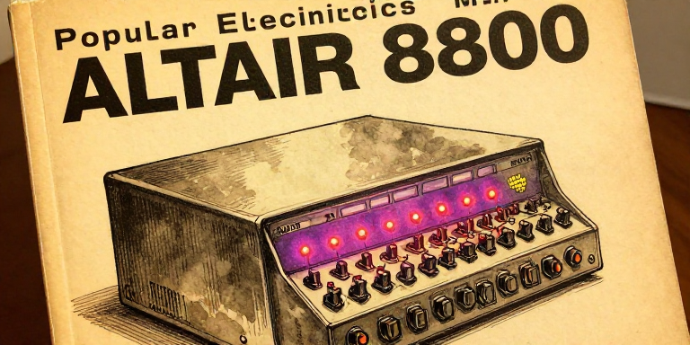
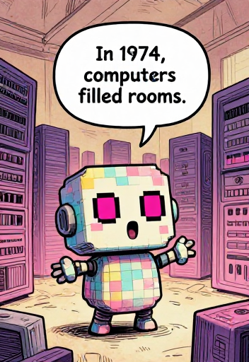
In 1974, computers filled rooms.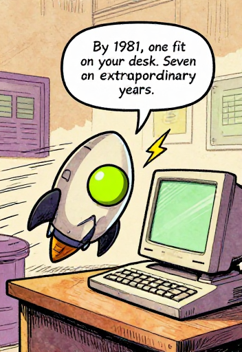
By 1981, one fit on your desk.In January 1975, the MITS Altair 8800 — a kit computer based on the Intel 8080, sold for $439 — had no keyboard, no screen, and was programmed by flipping toggle switches. It was, by any practical measure, nearly useless. It changed everything.
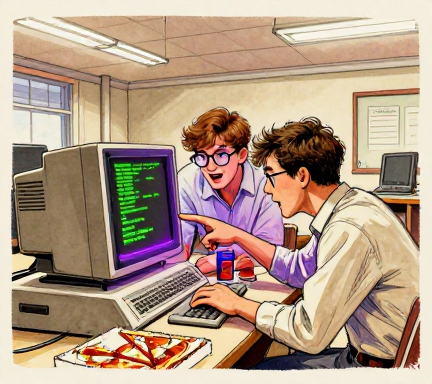
Bill Gates and Paul Allen wrote a BASIC interpreter for the Altair on a Harvard PDP-10, using a homemade emulator — they had never touched an Altair. When Allen demonstrated it, the software ran on real hardware for the first time. It worked. They founded Microsoft in April 1975.
In February 1976, Gates published an angry "Open Letter to Hobbyists," arguing that copying software without paying was theft: "Who can afford to do professional work for nothing?" The hobbyist community was furious — many saw software as something to be freely shared. This letter is often cited as the opening shot in the free vs. commercial software debate.
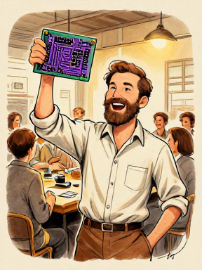
Steve Wozniak designed the Apple I single-handedly and gave away the schematics. His friend Steve Jobs convinced him the designs could be sold. They founded Apple Computer on April 1, 1976. The Apple II (1977) — with color graphics and eventually the VisiCalc spreadsheet (1979), the first "killer app" — made personal computing real for businesses.
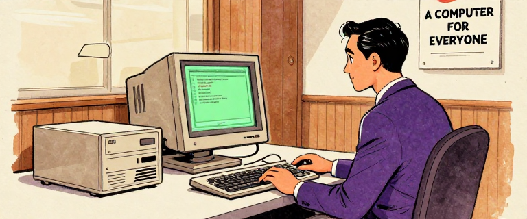
On August 12, 1981, the IBM PC launched with an open architecture. Microsoft supplied MS-DOS, acquired for around $50,000–$75,000 — and crucially retained the right to sell DOS to other manufacturers. This single licensing decision would make Microsoft one of the most valuable companies on Earth.
The personal computer did not just shrink computing. It changed who could compute. Power shifted from institutions to individuals. From priests of the mainframe to anyone with a desk and a dream.
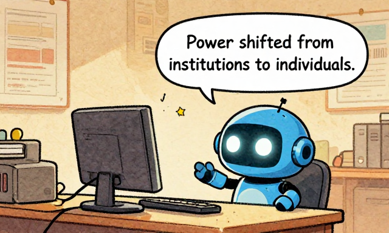
Power shifted from institutions to individuals.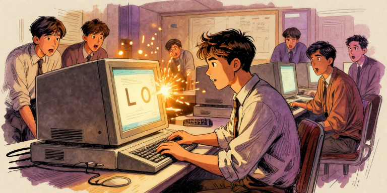
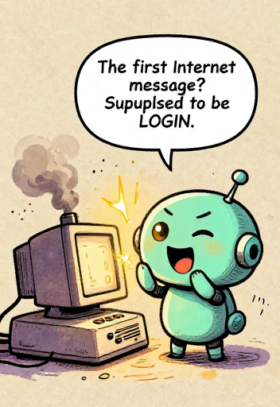
The first Internet message? Supposed to be LOGIN.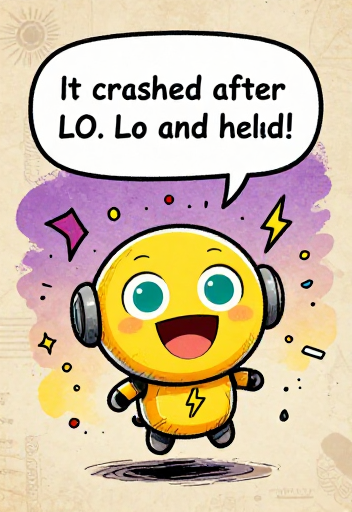
It crashed after LO. Lo and behold!The idea began with J.C.R. Licklider, a psychologist and computer scientist at ARPA, who imagined an "Intergalactic Computer Network" where researchers everywhere could share data freely. Larry Roberts designed ARPANET's architecture. Leonard Kleinrock at UCLA developed the theory of packet switching. The team at BBN built the routing machines.
On October 29, 1969, UCLA graduate student Charley Kline tried to send "LOGIN" to Stanford Research Institute, 350 miles away. He typed L. Confirmed. O. Confirmed. G. The system crashed. The first message sent over ARPANET was "LO."
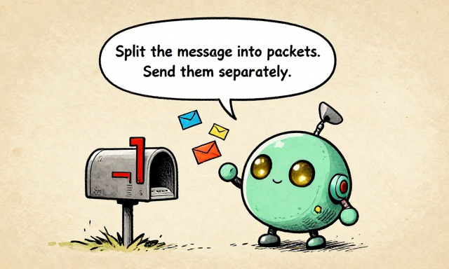
Split the message into packets. Send separately.Myth: ARPANET was built to survive nuclear war. Reality: Completely false. ARPANET was built to let researchers at different universities share expensive computing resources. The confusion comes from Paul Baran's separate 1964 RAND Corporation research on survivable networks.
The Internet is a postal system, not a phone call
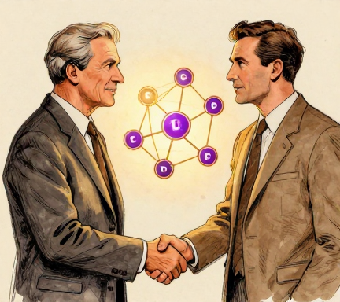
Vint Cerf (born 1943, hearing-impaired since childhood) and Bob Kahn (born 1938) published the design for TCP/IP in May 1974 — a universal set of rules for breaking messages into packets, addressing them, routing them, and reassembling them.
On January 1, 1983 — "flag day" — every computer on ARPANET switched to TCP/IP simultaneously. Many historians call this the true birth of the Internet: the moment when different networks could, for the first time, speak the same language.
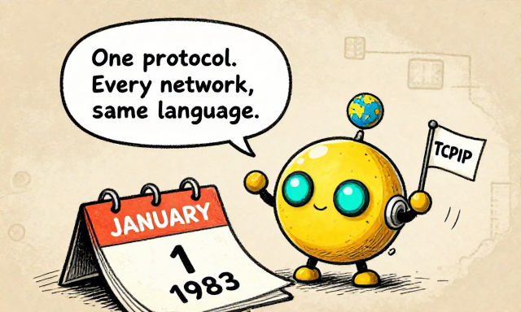
One protocol. Every network, same language.ARPANET did not just connect computers. It established a principle: build a universal protocol, and any network can join. TCP/IP did not care what kind of computer you had. It only cared that you spoke the same language. That openness is why the Internet scaled to billions of devices.
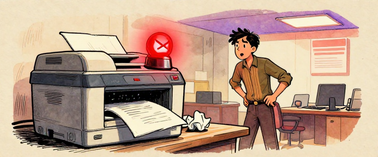
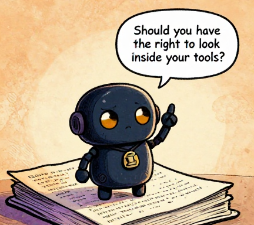
Should you have the right to look inside your tools?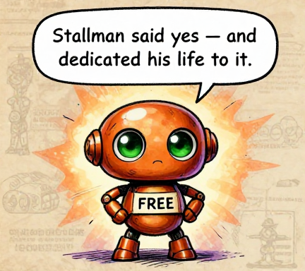
Stallman said yes — and dedicated his life to it.Richard Stallman (born 1953, New York) had been a programmer at MIT's AI Laboratory since 1971. In the AI Lab of the 1970s, software was freely shared. If a program had a bug, anyone could fix it. The code was a commons.
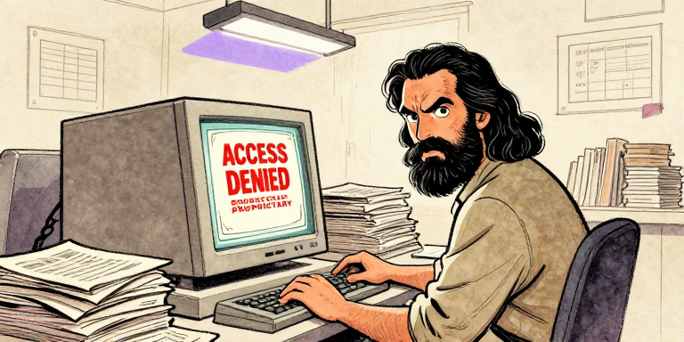
Stallman had modified a Xerox printer's software to notify everyone when a jam occurred. When MIT received a newer printer, he asked for its source code. Xerox refused — the code was now proprietary. "It was my first direct encounter with a nondisclosure agreement," Stallman later said, "and it taught me that nondisclosure agreements have victims."
On September 27, 1983, Stallman announced the GNU Project (GNU's Not Unix) — a complete, free operating system compatible with Unix. In 1985, he published the GNU Manifesto and founded the Free Software Foundation.
The Four Freedoms — the foundation of the free software movement
By the early 1990s, the GNU project had produced essential tools — the GCC compiler, the Emacs editor, the bash shell — but lacked a kernel. That missing piece would arrive in 1991, from a Finnish college student named Linus Torvalds. But that is a story for Issue 5.
Stallman's insight was this: software freedom is not a technical issue. It is a moral issue. If you cannot read, modify, and share the tools you depend on, you are not truly free. This idea would reshape the entire software industry.
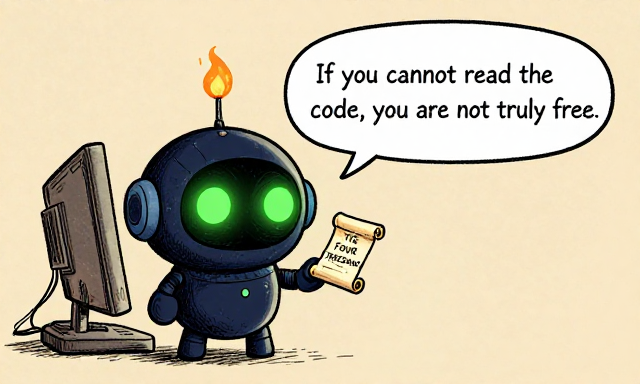
Cannot read the code? Not truly free.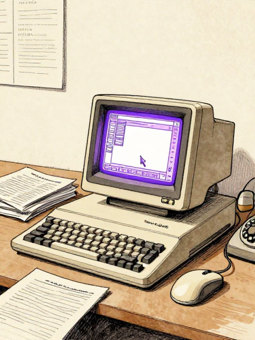
Xerox PARC (Palo Alto Research Center), established in 1970, was building the future. By the mid-1970s, PARC had invented the graphical user interface, Ethernet, laser printing, WYSIWYG editing, and object-oriented programming. Their Alto (1973) integrated all of it — windows, icons, menus, and a mouse.
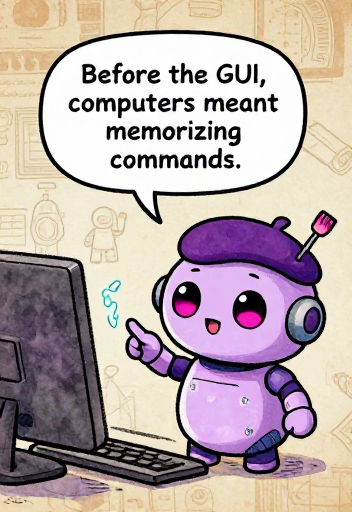
Before the GUI, computers meant memorizing commands.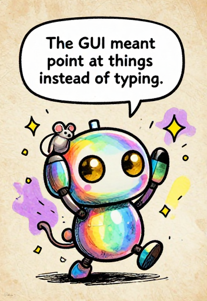
The GUI meant point at things instead of typing.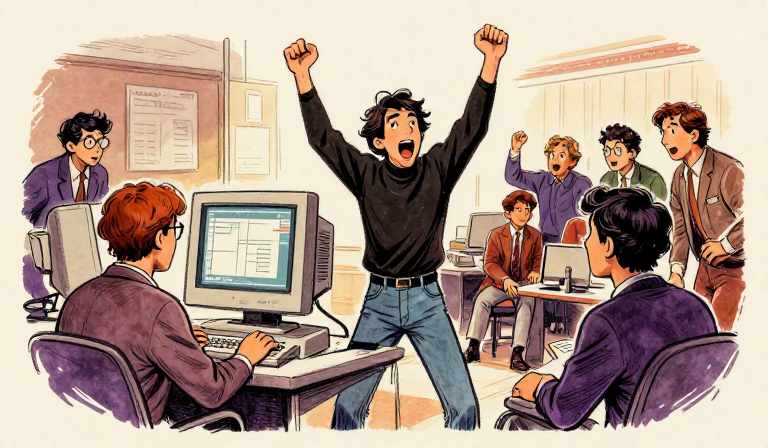
In December 1979, Steve Jobs visited PARC. Researcher Larry Tesler demonstrated the Alto. Jobs was electrified: "Why aren't you doing anything with this? This is the greatest thing! This is revolutionary!" Not everyone agreed — Adele Goldberg, a key developer of Smalltalk, objected to giving away PARC's crown jewels. She was overruled by management.
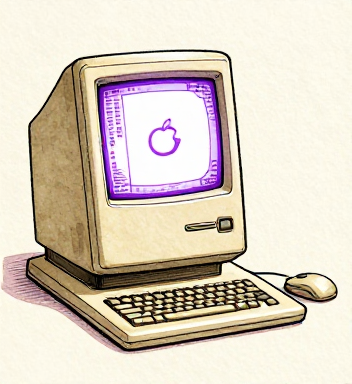
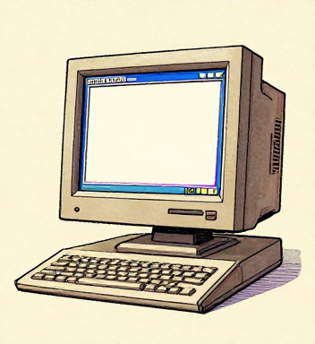
The Apple Macintosh launched January 24, 1984 at $2,495, with the legendary "1984" commercial by Ridley Scott. Apple didn't just copy PARC — they added the menu bar, drag-and-drop, and a simplified single-button mouse. Microsoft followed with Windows 1.0 in November 1985 — clunky and limited. It wasn't until Windows 3.0 (1990) that their GUI succeeded commercially.
The GUI lineage — no single entity invented the graphical interface
The GUI did not make computers more powerful. It made computers more accessible. And accessibility is a kind of power — the power to bring millions of new minds into the computing revolution.
Think About It: Every interface is a tradeoff. Command lines are fast and precise for experts. GUIs are intuitive for everyone. Today we are asking the same question again: is talking to an AI assistant the next interface revolution? What will that make possible?
Unix and C had proven that software did not have to be trapped on one machine. The Unix philosophy — small tools, piped together, doing one thing well — had shown that the most powerful systems are built from simple, composable parts. (Hold on to that idea. It will matter again, profoundly, in our final chapters.)
Personal computers had moved computing from the institution to the individual. The GUI opened the door for everyone. Richard Stallman and the free software movement declared that code should belong to everyone. And ARPANET had quietly evolved into something with the potential to connect all of it.
But in 1989, the vast majority of personal computers were still isolated. You could write a document, play a game, run a spreadsheet — but sharing anything with another human being meant copying it to a floppy disk and physically carrying it across the room.
Five pillars of the computing landscape — but the connection between them is still missing
Humans had built brilliant, powerful personal machines. They had built a network that could, in theory, connect them all. But the two revolutions had not yet merged. It would take a physicist at a European research lab, trying to solve a very mundane problem — sharing documents with his colleagues — to connect the final wire.
The 1970s and 1980s were an era of liberation. Software was freed from hardware. Computing was freed from institutions. Users were freed from expertise. Code was freed from ownership. But the final liberation — connecting every machine and every person — was still waiting. That story begins next.